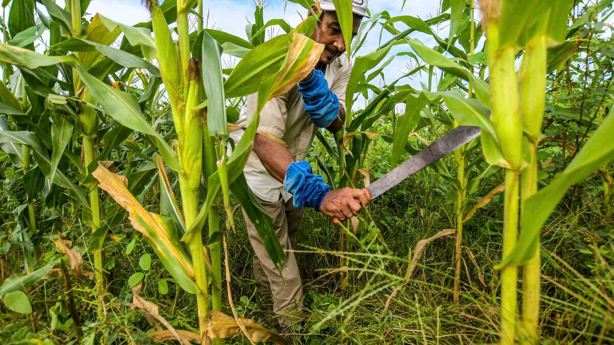

Realiza análisis de suelo antes de sembrar
Un análisis básico de suelo permite ajustar la fertilización y elegir cultivos mejor adaptados a la textura, pH y disponibilidad de nutrientes del lote.
- Indicador clave: pH entre 5.5 y 7.0 para la mayoría de cultivos priorizados.
- Frecuencia: Cada 2–3 años por lote o cuando cambies de cultivo principal.